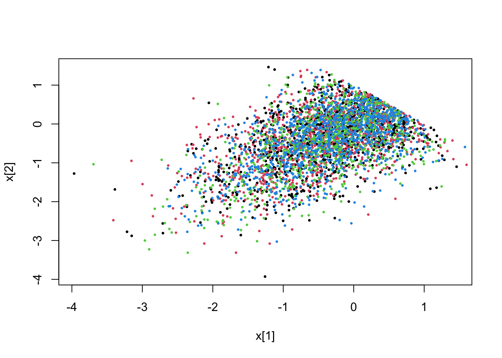
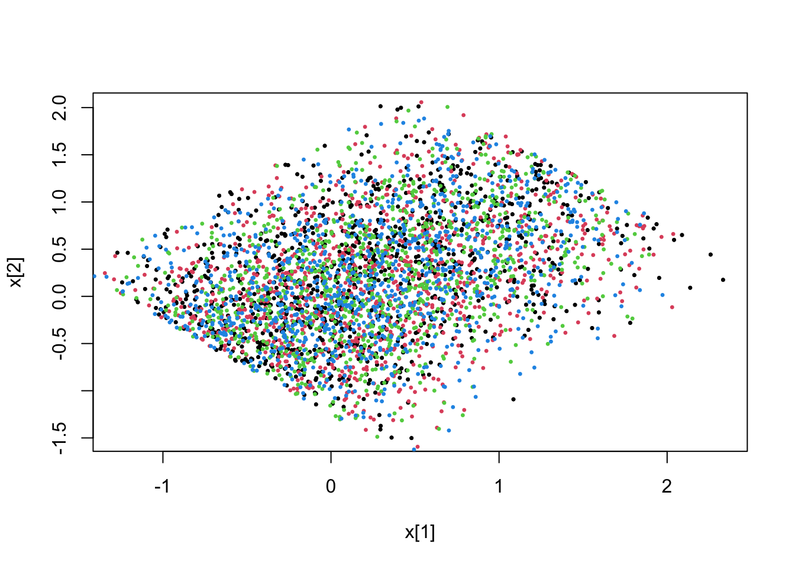
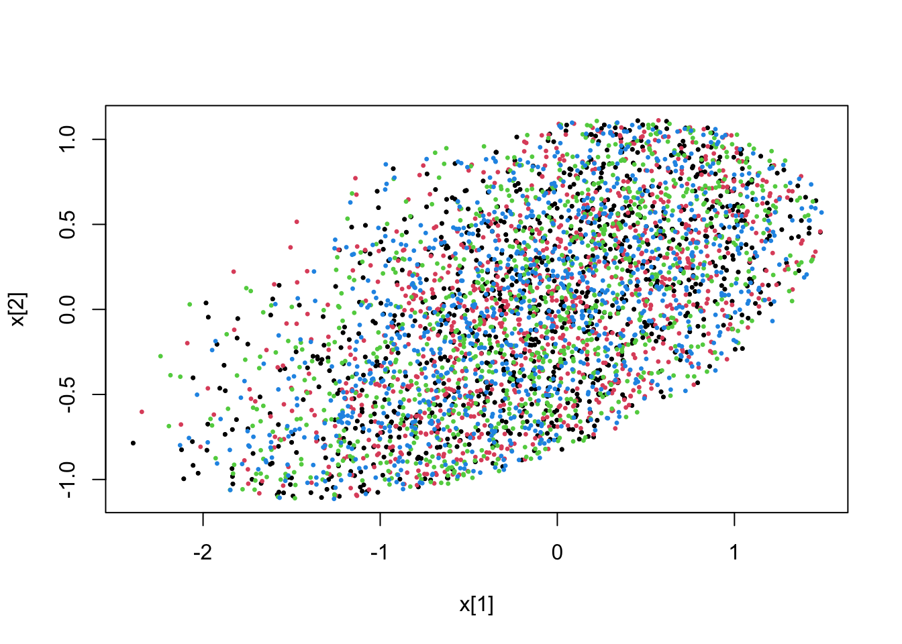

Chapter 5 Constraints
In a recent update of pdmphmc, constraints are included as a part of the model specification.
The parameters of the model may be specified to be constrained to on a specific domain, i.e. so that sampling is performed with stationary distribution being \[ \propto \pi(\boldsymbol \theta) \; \text{such that}\; c_1(\boldsymbol \theta)>0,\dots,c_B(\boldsymbol \theta)>0 \] where \(c_b(\boldsymbol \theta),\;b=1,\dots,B\) are scalar constraint functions.
Further details regarding the numerical details may be found in a paper which will be published very soon.
Constraints are so far only available for the fixed mass sampler, and requires that the RKBS32 integrator is used (see Section 7.3, obtained using step.type = "RKBS32" in build()) .
5.1 Specifying constraints
There are several different types of constraints, all of which are specified by member-functions
of the amt::amtModel class (see examples below).
In many cases, a given constraint may be specified in multiple ways, and in general, always using the non-linear constraint specification described at the end of this subsection. However, if the constraint in question has some special structure, this may be exploited in the numerical implementation to obtain faster sampling, and should therefore be used. Below, first the different such special structures are described, before general non-linear constraints are discussed.
5.2 Special constraints
The following special constraints are available:
5.2.1 Dense Linear constraints
may be written as
\[
\mathbf a^T \boldsymbol \theta - b>0
\]
where \(\mathbf a\) is a constant (i.e. not depending on \(\boldsymbol \theta\)) vector and \(b\) is a constant scalar. Specified using linConstraint(). The user is only responsible for providing code for \(\mathbf a^T \boldsymbol \theta - b\). E.g.
template < class varType, class tensorType, bool storeNames>
void operator()(amt::amtModel<varType,tensorType,storeNames> &model__){
PARAMETER_VECTOR(theta,2); // parameter (sampled quantity)
/* ... */
varType s = 0.5*theta(0)-2.0+theta(1); // should be positive
model__.linConstraint(s); // specify the constraint
}ensures that sampling only occur for values of \(\boldsymbol \theta\) so that \(s=\theta_1 /2 + \theta_2-2>0\).
5.2.2 Sparse Linear constraints
are essentially the same as dense linear constraints, but where \(\mathbf a\) is assumed to contain many zeros. Specified using sparseLinConstraint().
5.2.3 Sparse Linear \(L^1\) constraints
may be expressed as
\[
\parallel \mathbf A \boldsymbol \theta - \mathbf b \parallel_1 < c
\]
for constant matrix \(\mathbf A\), constant vector \(b\) and constant scalar \(c\). Specified using sparseLinL1Constraint() The user is only responsible for code evaluating \(\mathbf A \boldsymbol \theta - \mathbf b\) and \(c\). E.g.
template < class varType, class tensorType, bool storeNames>
void operator()(amt::amtModel<varType,tensorType,storeNames> &model__){
PARAMETER_VECTOR(theta,2); // parameter (sampled quantity)
/* ... */
VectorXv t(3); // should have L1-norm less than 2.0
t(0) = theta(0) + 1.0;
t(1) = theta(1)-theta(0);
t(2) = theta(0) + 1.0;
model__.sparseLinL1Constraint(t,2.0); // specify the constraint
}It is assumed that matrix \(\mathbf A\) is a sparse matrix.
5.3 Non-linear constraints
Suppose the the constraint may be written as \[ F(\mathbf A \boldsymbol \theta - \mathbf b)>0 \] for some non-linear function \(F:\mathbb R^p \mapsto \mathbb R\), a constant matrix \(\mathbf A\) with \(p\) rows and a constant vector \(\mathbf b \in \mathbb R^p\). Further, it is assumed that the gradient of \(F\) may be computed, either analytically or at least be found efficiently using automatic differentiation.
Note that \(A\) may in principle be the identity matrix, but it is often the case that \(p\) is much smaller than the dimension of \(\theta\). Such constraints should be specified via a functor class and the sparseLinFunConstraint()-function.
Technical details regarding the constraint functor are found below in Section 5.3.1. First, a working example of the functor representing \(F(\mathbf z)=1-\frac{1}{2}\mathbf z^T \mathbf z\) is considered. The functor should both include code evaluating \(F\) itself and also \(F\) and the gradient of \(F\):
class L2fun : public constraintFunctor {
public:
// evaluates F only
inline double operator()(const Eigen::VectorXd& arg) const {
return(1.0-0.5*arg.squaredNorm());
}
// evaluates F and the gradient of F stored in grad
inline double operator()(const Eigen::VectorXd& arg,
Eigen::VectorXd& grad) const {
grad = -arg; // gradient of F
return(operator()(arg)); // return value of F itself
}
// arbitrary name
inline std::string name() const {return "L2fun__";}
};Further, the model specification should include an instance of the functor, and a
call to the model-member function sparseLinFunConstraint(), e.g.
using namespace amt;
struct model{
L2fun functor;
/* ... */
template < class varType, class tensorType, bool storeNames>
void operator()(amt::amtModel<varType,tensorType,storeNames> &model__){
PARAMETER_VECTOR(x,5);
/* model etc... */
// ensures that 0.5*sqrt(sum(x[0:2]^2))<1.0
model__.sparseLinFunConstraint(x.head(3),functor);
}
}5.3.1 Details of the constraint functor
The functor representing \(F\) must inherit virtual base class
class constraintFunctor{
public:
virtual double operator()(const Eigen::VectorXd& arg) const = 0;
virtual double operator()(const Eigen::VectorXd& arg,
Eigen::VectorXd& grad) const = 0;
virtual inline std::string name() const {return "unnamed constraint functor";}
};Additional member functions/non-trivial constructors may be added as necessary.
The pdmphmc package comes with a simple forward mode automatic differentiation library FMVAD which may be used to calculate the required gradient if the gradient is complicated to code. The library is yet to be documented.
5.4 Worked example
The following code is contained in file constraint_model.cpp :
class nonLinFun : public constraintFunctor {
public:
// evaluates F only
inline double operator()(const Eigen::VectorXd& arg) const {
return(1.0 - arg(0)*arg(1));
}
// evaluates F and the gradient of F stored in grad
inline double operator()(const Eigen::VectorXd& arg,
Eigen::VectorXd& grad) const {
if(grad.size()!=arg.size()) grad.resize(arg.size());
grad.setZero();
grad(0) = -arg(1);
grad(1) = -arg(0); // gradient of F
return(operator()(arg)); // return value of F itself
}
// arbitrary name
inline std::string name() const {return "some_constraint_functor";}
};
using namespace amt;
struct model{
nonLinFun functor_;
DATA_INT(constrType); // which constraint type to use, passed from R
void preProcess(){} // not used in this example
template < class varType, class tensorType, bool storeNames>
void operator()(amt::amtModel<varType,tensorType,storeNames> &model__){
PARAMETER_VECTOR(x,2); // parameter (sampled quantity)
// x is bivariate normally distributed with correlation rho
// before any constraints are imposed
double rho = 0.7;
model__+=normal_ld(x(0),0.0,1.0);
model__+=normal_ld(x(1),rho*x(0),sqrt(1.0-rho*rho));
// now add the different constraints
if(constrType==1){
model__.linConstraint(1.0-x(0)-x(1));
} else if(constrType==2){
model__.sparseLinConstraint(1.0-x(0)-x(1));
} else if(constrType==3){
VectorXv z = x;
z(0)-=0.5;
z(1)-=0.25;
model__.sparseLinL1Constraint(z,2.0);
} else if(constrType==4){
VectorXv z(x.size());
z(0) = x(0) + 0.5;
z(1) = 2.0*x(1) - 0.5*x(0) - 0.25;
model__.sparseLinL2Constraint(z,2.0);
} else if(constrType==5){
model__.sparseLinFunConstraint(x,functor_);
}
}
}; // end of structThe model is built and run without constraints using (note step.type = "RKBS32")
mdl <- pdmphmc::build("constraint_model.cpp",step.type = "RKBS32")## model name : model## process type : HMCProcessConstr## Runge Kutta step type : RKBS32## Transport map type : diagLinearTM_VARI## compilation exited successfully# unconstrained
fit <- pdmphmc::run(mdl,data=list(constrType=0L))## Note: no integrated samples recordedpdmphmc::pair.plot(fit,"x[1]","x[2]")5.4.1 Linear constraints (dense and sparse)
# (dense) linear constraint 1.0-x(0)-x(1)>0
fit <- pdmphmc::run(mdl,data=list(constrType=1L))## Note: no integrated samples recordedpdmphmc::pair.plot(fit,"x[1]","x[2]")
# linear constraint 1.0-x(0)-x(1)>0
fit <- pdmphmc::run(mdl,data=list(constrType=2L))## Note: no integrated samples recordedpdmphmc::pair.plot(fit,"x[1]","x[2]")
5.4.2 \(L^1\) constraint
# L1 norm of (x(0)-0.5,x(1)-0.25) smaller than 2.0
fit <- pdmphmc::run(mdl,data=list(constrType=3L))## Note: no integrated samples recordedpdmphmc::pair.plot(fit,"x[1]","x[2]")